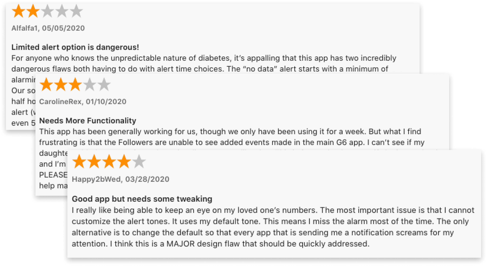
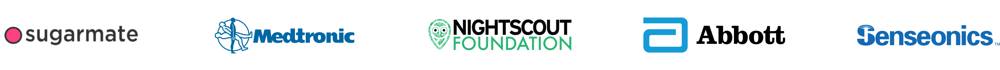
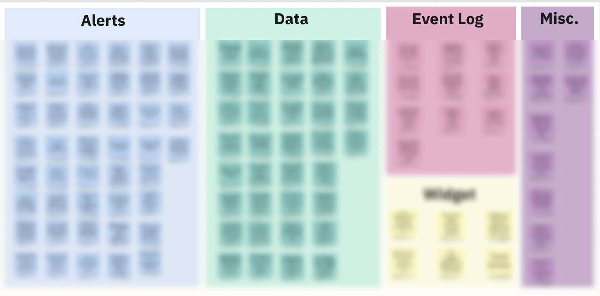
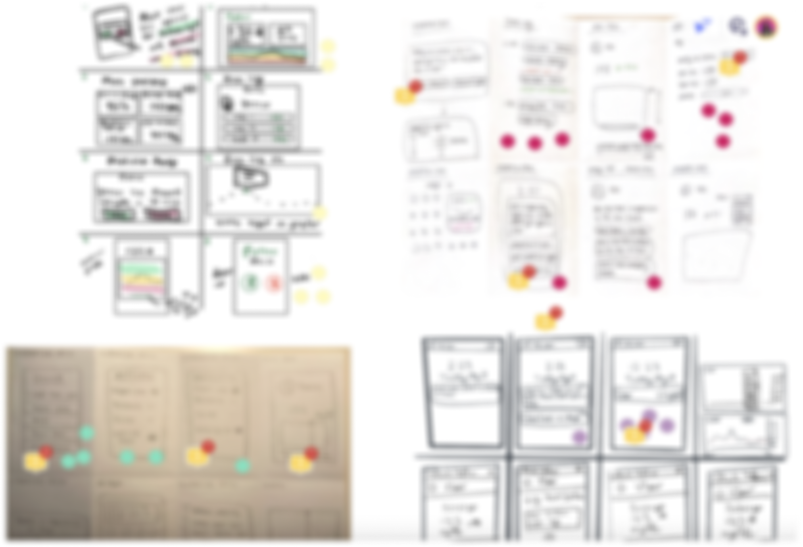
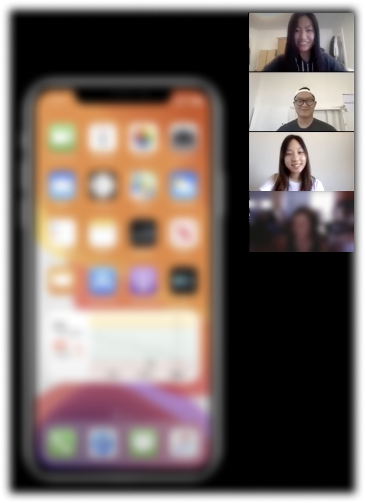
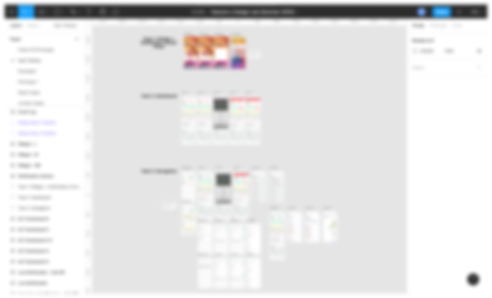

🌸 Overview
Redesigned the Dexcom Follow app for parents monitoring their children with Type 1 diabetes, addressing pain points from extensive user research.
My Responsibilities: Conducted secondary research & user interviews, iterated on low to high-fidelity prototypes & conducted usability tests.
Duration: Jun - Aug 2020 (10 weeks)
Role: UX Designer & Researcher
Tools: Figma, Miro
Note: My work is under NDA. If you are interested in learning more, please feel free to contact me! I would be happy to share my experiences & takeaways at a high level.
📖 Background
Dexcom is a company that produces continuous glucose monitoring (CGM) systems to help those with diabetes track and manage their glucose levels.
Last summer, I had the opportunity to work with Dexcom again, after previously working with them and the UCSD Design Lab in Winter 2020. I participated in the Diabetes Design Initiative (DDI) once again, but this time it was fully remote due to COVID-19.
For 10 weeks, I worked in a team of 4 on researching, ideating, and designing solutions to enhance the experience for people who use the Dexcom Follow app.
👨👩👧 What does the Follow app do?
The Dexcom Follow app connects people with diabetes to their loved ones. It allows their Followers to view and monitor their blood glucose levels, trends, and data. The most common users are parents and children, where the child is the CGM user and their parent is their Follower.
❓ Problem
Many parents use the Follow app as their primary way to see real-time readings about their children's blood glucose levels. It can be frustrating when the app doesn't provide them with everything they need, especially when treating an urgent low alert.
How might we implement or update features in Follow to address a wide spectrum of user needs?
🤔 What are users saying about the Follow app?
We conducted extensive secondary research to provide context on the problem and understand user pain points. We examined 50 most recent app reviews on both the App Store and Google Play Store, and sorted them by user sentiment. We found that 94% of reviews were negative. We then categorized the reviews based off of pain points and saw what issues were the most common among users.
🗣 Users echoed their pain points on social media
Besides app reviews, we also looked on social media platforms, such as Facebook and Reddit, to collect feedback about what users were saying about the Follow app.
We found that they shared similar sentiments and pain points with those who had written app reviews. These findings allowed us to create proto-personas of our target audience and helped us formulate our interview questions.
Most common user pain points
- Lack of alert customization with sounds and setting repeating alerts
- Limited to only 24 hours of data when phone is turned horizontally
- Graph doesn't have enough detail
"It's disappointing that I can't customize my alarms very well. It's nice to have backups because the Follow app is unreliable sometimes." — Mother of daughter with T1D
🔍 Competitors allowed greater customization of alerts
We performed a competitive analysis with CGM monitoring apps similar to Follow to see what their competitors were doing and look at potential areas of improvement. The main difference between the Dexcom Follow app and their competitors was in the level of customization for alerts.
💬 Speaking directly to Follow App users
As a team, we conducted 20 user interviews remotely on Zoom with parents and caretakers who monitor their children using the Follow app. We wanted to hear about their experiences so far using Follow, understand their pain points, and see what features they would want implemented to the app.
We compiled all the interview notes and responses on a spreadsheet and on our Miro board for affinity mapping to organize our findings and categorize the different problems and opportunities we could design for.

*Photos blurred for confidentiality
✨ Opportunities
After synthesizing our user research and interview findings, we came up with 3 main opportunities to focus on:
01Greater alert customization
to allow users to set when and how they want to receive alerts.
02More data accessibility
to allow users to view more detailed data, trends, & statistics.
03Addition of event logs
to provide users with more context behind the glucose readings.
📝 Design Principles
From our research, we came up with these design principles to keep in mind:
- Efficiency — allow users to quickly do what they need to do
- Trustworthy — provide the information users need
- Simplicity — keep it clean and simple
- Consistency — create familiarity with users
💡 Ideation
Keeping those design principles in mind, we started ideating. Each team member did Crazy 8's to explore different ideas that our redesigned Follow app could implement. We did dot voting to narrow down the ideas we liked best and worked together to combine them in a working prototype in Figma.
Affinity mapping in Miro
Low-fidelity paper sketches
👩🏻💻 Testing our iterative designs
Then we conducted 7 usability tests and walked each participant through our testing session over Zoom. We had them complete typical tasks on the app and observed how they responded to our new proposed features.
After each user test, we constantly ideated and iterated based off their feedback, so each user saw a new and improved version of the prototype each time. Their input was extremely valuable and helped us decide the best way to represent our ideas on the screens.
Usability testing on Zoom
Mid to High-fidelity prototyping in Figma
Note: Due to NDA, I cannot disclose the full details and images of my work. But after conducting usability testing, 100% of users said the new features we added and redesigned would be really helpful and they would love to see them live in the current app!
At the end of the internship, we presented and handed off all our research, findings, and designs to our stakeholders. We also included our recommendations to Dexcom for what they could implement to the Follow app, and categorized the new features by priority. The sentiment from our stakeholders were all overwhelmingly positive!
"Really great job with the research— it sounds like you were really listening to our users. Designs were very solid, loved the outcome!" — Director of UX Design @ Dexcom
💭 Takeaways
- Learned how to prioritize features that were most important to users.
We conducted a lot of user research and interviews and came up with a prototype that combined a lot of features that several users wanted. But because there were so many new features we could explore, I learned how to prioritize the ones that were the most important to users, based on our research and user pain points.
- It's important to be open to feedback.
Being receptive to design feedback & critiques is crucial in order to improve on design iterations, making sure to take user feedback into account.
- Learned how to effectively communicate my design thinking to stakeholders
Showing the intentionality behind our designs, like why we designed something, is important. We did this by presenting clear research findings and supporting it with stats from our user interviews and usability tests to show how important our users’ feedback was and how that impacted our designs.